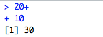
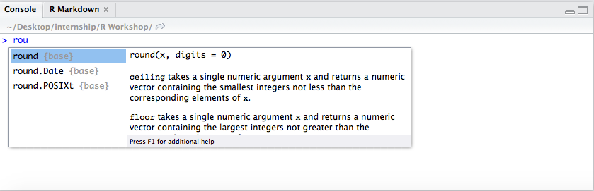

Chapter 1 Week 1
1.1 Introduction to R and RStudio
Welcome to Data Analysis for Psychology in R! This week we would like to focus on getting you started in R, get your software installation issues sorted and attempt some very quick and basic practice. There is a lot to cover as we will be moving through the year so if something may look overwhelming, just bear with us, we will make sure that we cover as much as possible so by the end of the year you will become a confident user of R.
Everyone in our team really likes R and we hope that you will love it too :)
R has a great community built over years and includes researchers, industry practitioners and curious minds across disciplines and fields. R also has been getting better and better over the years and now R has a large online community which shares solutions to any issues/encounters while you are learning R during your time at UoE and after the university.
If unsure about something, don’t be afraid to simply Google it! If getting an error, sometimes the fastest you can do is to actually copy and paste it and let Google find you an explanation of what happened. But before doing that, come to labs regularly, ask questions, read the course materials carefully. R can be confusing at the start but we all have been there so stay with us ;)
1.2 Install the recent version of R and R Studio
1.2.1 First Step
Depending on the operating system you may check the right version you need. You will need first to install the body of R.
1.2.2 Second Step
We then will install RStudio. Rsudio is a useful interface that allows us to interact with R and where can see our data, results from analyses and various plots/visualisations.
Get a right version for your operating system here
- For Windows pick RStudio 1.2.1335 - Windows 7+ (64-bit)
- For MacOS pick RStudio 1.2.1335 - macOS 10.12+ (64-bit)
Any issues? Let us know!
Quick note: it is useful to update your R from now and then. As you progress in your degree, try to update you R every year you are back to dapR.
1.3 Getting Started in RStudio
RStudio is what is called an Integrated Development Environment for R. It is dependent on R but separate from it. There are several ways of using R but R Studio is arguably the most popular and convenient. It’s time to open it up and get started! When you first open up RStudio, this is what you should see:

There’s a whole lot of text that (1) isn’t very interesting, and (2) generally isn’t that important so you don’t need to pay much attention to it.
1.4 R as an interactive environment
RStudio has four panels: Current file (Editor), Console, Environment, and Viewer. We will focus on using those more in the upcoming labs.

The Information area (all of the right-hand side of RStudio) shows you useful information about the state of your project.
The top panel of the Information side of RStudio contains the Environment and History panes. History contains the history (unsurprising I know) of commands that have been typed into the console. The Environment is virtual storage of all objects you create in R, and contains your list of variables, data frames, strings, etc., which R has been told to save from previous commands. The bottom panel of the Information section contains a number of different panes - Files, Plots, Packages, Help, and Viewer. In other words, you have a file manager (where you can view which files are loaded into your project), a panel to show plots and graphs, a list of packages, help on the functions available within R, and viewer allows you to view local web content.
On the left-hand area of RStudio, you have your Current File (Editor) and Console. The “heart of R” is the Console window. This is where instructions are sent to R, and its responses are given. It’s the place to try things out, but don’t want to save. Finally, the Editor is where you write more complicated scripts without having to run each command. When you run such a script file, it gets interpreted by R in a line by line fashion. This means that your data cleaning, processing, visualization, and analysis needs to be written up in sequence otherwise R won’t be able to make sense of your script. There is an important practical distinction between the Console and the Editor: In the Console, the Enter key runs the command. In the Editor, it just adds a new line.
The hash (#) marks everything to the right of it as comment. Using comments can be very useful for annotating your code, and it improves the readability too. It will also help you to remember why/what you done months later, when you return to your code that you have inevitably forgotten!
1.5 Check your settings
Before we get to some work in R, let us first make sure that everything works the way we want. Some of you may want to change the appearance of your R, adjust fonts or colors so you find it easier to use R on your computer.
1.5.1 Disable automatic saving of your workspace
We will need this to make sure that we clear up our working space each time you close you RStudio so you can start afresh each week without piling up staff in your environment. You will see what we mean as we practice. For now, let’s do the following:
1.5.2 Adjust fonts/colours if you like
Depending what works better for your vision and experience, there are number of choices to personalise the look of your R. Try these out here:

1.6 Setting Up Your Working Directory
Step 1. Create a folder (sub-directory) named dapR1 on your “Desktop” folder
Step 2. From RStudio, use the menu to change your working directory under Session > Set Working Directory > Choose Directory
Step 3. Choose the directory you’ve just created in Step 1
Step 4: Select File -> New File -> R Script. In the window that appears, click on the disk icon just below Untitled1 and save the blank script as Lab1.R. Make sure that this saves in your DAPR1 folder.
For the purpose of this course, we’re going to be using scripts and RMarkdown files (more on that next week), but first, lets have a play around with the console so you can familiarise yourself with it.
1.7 The Console
Click on the console, type 1+1, and hit enter
## [1] 2It should have hopefully returned the answer 2. Next type 2*1, and hit enter. This should return the sum value.
## [1] 2Now, hit ctrl + uparrow (cmd + uparrow on mac). This is a useful shortcut, and allows you to quickly re-run or edit previous code used in the console. This handy little shortcut isn’t needed in the script, as you’ll be able to easily copy, change, or run code as needed.
1.8 Spacing
You can use spaces to make code easier to read, and although R is pretty good at ignoring large gaps, it does have to guess and make the assumption that the spacing was unintended. Try to keep your code neat and tidy!
## [1] 2What you can’t do is insert spaces into the middle of a word, or R will get upset with you.
1.9 Typos
You’ll also need to be careful to avoid typos, as R will not know that it is producing unintended output. Instead, it will assume that you meant exactly what you typed. For example, suppose you forget to press the shift key when typing the + sign. Your command would then be 20 = 10, as opposed to 20+10. Here is what would happen:
## Error in 20 = 10: invalid (do_set) left-hand side to assignmentAnd there you have it - your first error message! This happens when what you type doesn’t make any sense to R. It’s a pretty touchy programme, and can’t spot these kinds of simple human mistakes. Sometimes, R will produce the right answer, but to the wrong question, if you are not careful with what you type. Sticking with the same example, suppose your hand slipped and you pressed the “-” key next to the +. R has no way of knowing that you intended to add 10 to 20, not to subtract. This time you’d get:
## [1] 10This can be a little more dangerous, especially when you are working on more advanced stuff, as it can become more difficult to spot mistakes in output. The take home message is simple: You must be precise and accurate with what you say to R. It’s mindlessly obedient, and doesn’t have auto correct. Be careful with what you type!
1.10 Unfinishe…. d
Sometimes, you might get a little too excited and hit enter when you haven’t actually finished a command. Because R is so obedient, it will just keep waiting. For example, if you type 20 + and then press enter, R will know that you probably want to put another number at the end of that command.
and there in the console you should see a blinking cursor on the right of your + sign. This tells you that R is still waiting for you to finish your command, and the + sign is another command prompt. If you now type 10 and press enter, you will get:

1.11 Basic Arithmetic
Table 1 lists the operators that correspond to the basic arithmetic:
| Operation | Operator | Example Input | Example Output |
|---|---|---|---|
| Addition | + | 20 + 10 | 30 |
| Subtraction | - | 20 - 10 | 10 |
| Multiplication | * | 20 * 10 | 200 |
| Division | / | 20 / 10 | 2 |
| Power | ^ | 20 ^ 10 | 1.024e+13 |
The one important thing to remember when using R to calculate sums is that brackets always come first. One easy way to remember this is to enclose what you want to happen first in brackets e.g. (20/10) * 2. In this example, R would have done the division first anyway, but its always important to make sure that R is doing exactly what you want!
1.12 Using Functions for Calculations
As you will have seen above, there are lots of calculations you can do with very basic operators. If you wanted to do more advanced calculations, you need to use functions. Lets run through a few of the simple ones that are handy to use in R.
| Operation | R code | Example Input | Example Output |
|---|---|---|---|
| Square root | sqrt( ) |
sqrt(100) | 10 |
| Absolute value | abs( ) |
abs(-100) | 100 |
| Round | round(x, digits = ) |
round(12.345, 2) | 12.35 |
| Minimum | min(...) |
min(2.21, 2.22) | 2.21 |
| Max Maximum | max(...) |
max(2.21, 2.22) | 2.22 |
It’s also useful to note that you can use multiple functions together and combine them if desired. For example:
## [1] 12R has started out by calculating abs(44), and then simplifies the command to sqrt(100+44). To solve the sum, it then needs to add 100 and 44, before evaluating the sqrt(144), and returning the value of 12.
Top Tip: Lets take an example from above, and say that we wanted to round a value. This time, in the console, start typing the name of the function, and then hit the ‘tab’ key. RStudio will display the below window.

There are two panels: one gives a list of variables that starts with the letters I’ve typed, and the other tells you what it does. If you have the name of the function written, R will recognise this, and instead pop up with the arguments for that function instead.
1.13 R Scripts
Now that you are hopefully familiar with the console, lets try out writing in a script! R will continue to provide the output in the console, and hitting enter won’t make R run any command. You now need to press Ctrl + Enter (Cmd + Enter).
R operates on named data structures, and you can create very simple to very complex structures.
# In your script, create an object a and assign it the value of 1
a <- 1
# In the above, we would say "the variable (object) a is assigned to 1", or "a gets 1"
# increment a by 1
a + 1## [1] 2## [1] 1So, R returned us output as if it forgot we asked it to do a + 1 and didn’t change its value. That’s because we weren’t clear in what we wanted! The only way to keep this new value is to put it in an object.
## [1] 2Quick Note: The <- operator is used to ‘point’ to the object receiving the stated value. In most cases = can be used instead but we advise that you stick to <-. You can also make assignments in the other direction too:
## [1] 3Now, lets create a vector (or string) of numbers. This is a single entity that consists of a list of ordered numbers. If we wanted to create a vector called x, containing five numbers (2, 4, 6, 8, 10), we would use the R command:
In simple words, we have now created a list of the five numbers, and assigned them to the object x. We made use of the c() function, as we were giving R a list of values. Let’s take a look at x.
## [1] 2 4 6 8 10You can now use these objects in other commands. For example, lets say you wanted to square each of the values in x, or multiply by b:
## [1] 4 16 36 64 100## [1] 4 8 12 16 201.14 Short Example
Now that you’ve created your first variables to store some numbers, lets try an example. Say that you have all found that this course was extremely helpful as an introduction to R, and that you wanted to recommend to your friend to buy the materials online. Firstly, I’d want to calculate how many copies I’d sell if we actually turned this into a proper book. Since there are (roughly) 170 students in the whole class, and you all loved it, I’m going to assume 170 sales, and create a variable called sales. So, how do I do this?
Now to work out how much money I’m going to make per book. I need to create another variable called royalty, which we will use to indicate how much money I will get per copy sold. Let’s say I get £5 per copy and book get sold for £25.
The last thing I want to do is calculate how much money I’ll make from sales in this class. We now need to create our revenue variable, and ask R to print out the total value of revenue.
## [1] 850And there we have it - £850. As far as R thinks, the sales*royalty is the exact same as 170*5. What if at last minute a student decides to buy 10 copies for their friends too? That would mean that we need to update our revenue. The easiest way to do this is to overwrite the value.
## [1] 900But we can also be smarter:
## [1] 9001.15 Naming variables
You might have noticed so far that I’ve used very simple letters or names for my variables, and that they have all been written in lower case. R does have more flexibility in what you can name your variables, but it also has some rules…
- Variable names cannot include spaces: my revenue is not a valid name, but my_revenue is
- Variable names are case sensitive: Revenue and revenue are different names
- Variable names must be started with a letter or a full stop: You couldn’t use something like 1revenue or _revenue
- There are some reserved keywords that cannot be used to name variables with: These include,
if,else,for,in,next,TRUE,FALSE,NULL,NA,NaN,repeat,function,NA_integer_,NA_real_,NA_complex_. Don’t worry about remembering these,Rwill tell you if you make the mistake of trying to name a variable after one of these.
There are a few other things you’d want to consider too, such as using meaningful names, using short names, and using a conventional style for multiword names when necessary. Consistency is key!
1.16 Now over to you
You have seen a few basic operations you can do in R. Now it is time to try some yourself. These should be easy-peasy.
1.16.1 Exercise 1
- Calculate the product of 155*12
- Store the result in the ‘results’ object (check that it now appears in your environment)
- Now take a square root of the results
- Save the results in the object ‘final_results’
1.16.2 Exercise 2
- Go back to the revenues example
- Assuming that our book did not sell that great after all and we only sold 50 copies.
- Our publisher did not like it so they decrease the royalties that we get from sales so publisher can cover the cost of book production (new royalty is £3)
- What is the total revenue now?
Jessica Ward (https://twitter.com/RLadiesNCL/status/1138812826917724160).↩